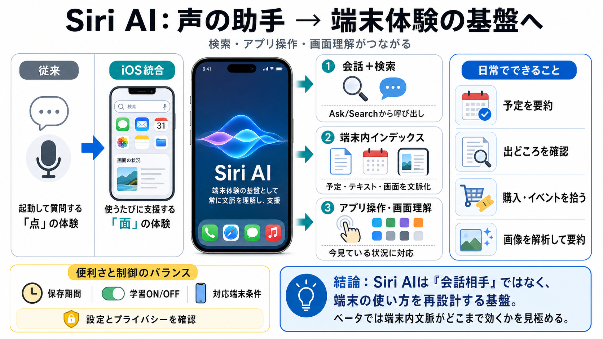

iOS 27 / Siri AI
02 / 10
声の助手→基盤へ
Siri AI
WIREDの観測をもとに、iOS 27の「改良されたSiri（Siri AI）」が“検索・アプリ操作・画面理解”と結びつき、体験のインフラ化していく流れを整理します。
problem
03 / 10
点の起動→統合
なぜ変わる？
従来のSiriは「起動して質問する」点の体験に寄りがちでしたが、Siri AIは“使うたびに役立つ”ように、検索やOS機能へ常時溶け込む方向です（iOS体験の基盤へ）。
core
04 / 10
会話＋検索＝同一線
統合
入口
チャット型アプリ
入口
Ask/Searchバーから呼び出し
広がる範囲
アプリ操作 / 画面理解 / 検索連携
狙い
無意識に支援される摩擦の低減
つまり“チャットが追加された”ではなく、Siriが端末の周辺体験をまたいで動く設計が中核です。
index
05 / 10
端末内の最適化
インデックス
概要
“Optimizing Search and Siri”系の検索最適化
参照
端末内テキスト / カレンダー / 画面情報
効果
文脈に沿った回答精度の向上
外部チャット（例：ChatGPT/Claude）と違い、OSに組み込まれることで「今この端末で何が起きているか」を拾いやすくします。
evidence
06 / 10
できることが日常へ
実例
予定
週の予定を要約し、通知やチケット関連を拾う
出どころ
画面の投稿/記事の“根拠（出所）”を確認する
購入
テキスト内容から購入やイベントを拾う
画像
カメラアプリのSiriタブで解析し要約・情報提示
使いどころが“質問”から“端末上の状況理解”に寄っている点が、体験の変化を作っています。
distinction
07 / 10
外部チャットとの違い
統合型
Siri AI（iOS統合）
端末内データや画面情報を前提に“文脈回答”を狙う
外部チャット
会話UIは近いが、OS文脈の直接参照は設計上別物になりやすい
価値
即時性のある“いま端末で起きていること”への対応
注意
参照精度や誤り時の挙動は、体験設計の要確認ポイント
UIの“チャット”だけでなく、参照範囲（インデックス/端末内文脈）が差別化の核です。
risks
08 / 10
便利さと制御
注意点
記憶
ベータではユーザー嗜好メモリーが弱い可能性
提供条件
ハード要件があり全員で同一体験にならない可能性
プライバシー
会話保存（30日/1年/永遠）や学習ON/OFFが重要
何が保存され、何が学習に使われるかを理解せずにONのまま使うと、不安と期待のギャップが大きくなり得ます。
closing
09 / 10
結論：試す価値
これから
要点
Siri AIは“会話相手”より“端末の使い方再設計”に近い
鍵
インデックス（検索最適化）× OS統合が体験差を生む
次のアクション
パブリックベータでは設定（保存/学習）と対応端末条件を確認
参照
外部AIではなく“端末内文脈”がどこまで効くかを見極める
パブリックベータは不確実性がありますが、普段Siriを使わない層にも“試す価値”が具体的に見えてきた—これが記事の大きなメッセージです。
REFERENCES
10 / 10
References
No references found